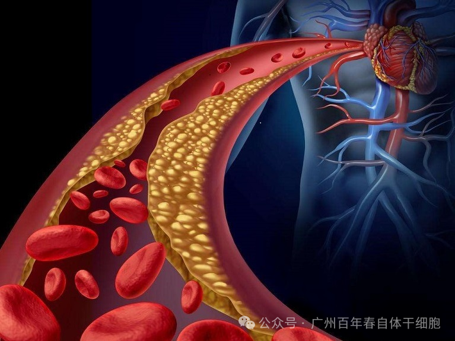
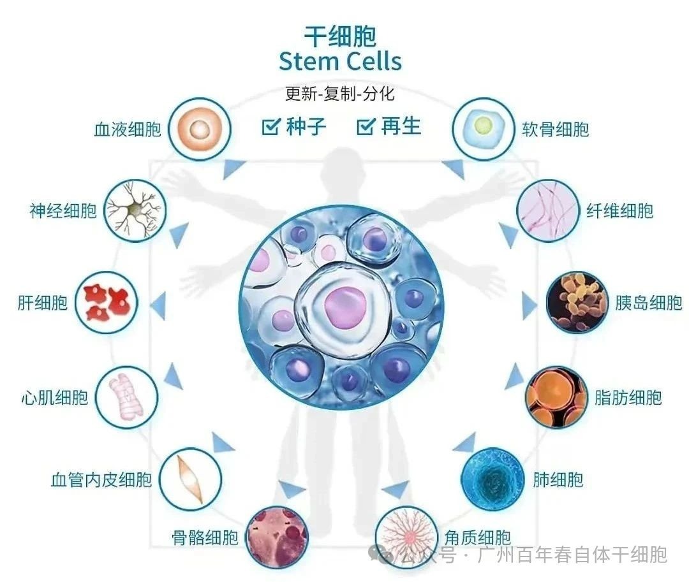
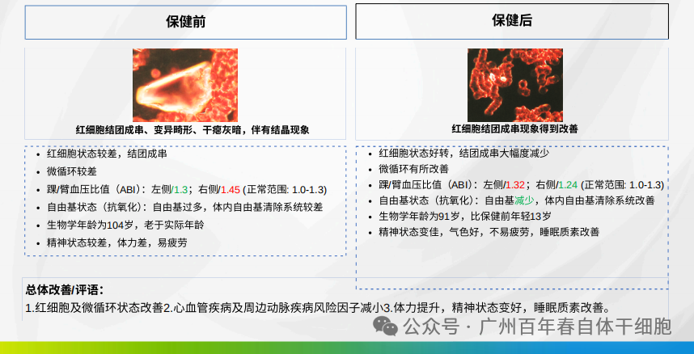
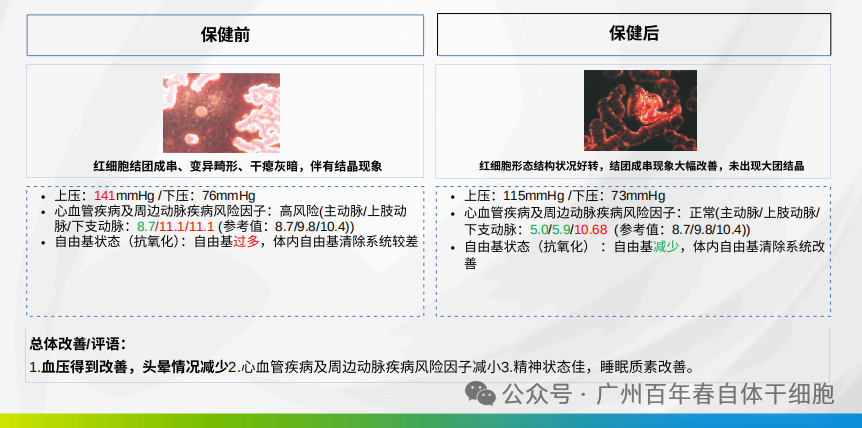
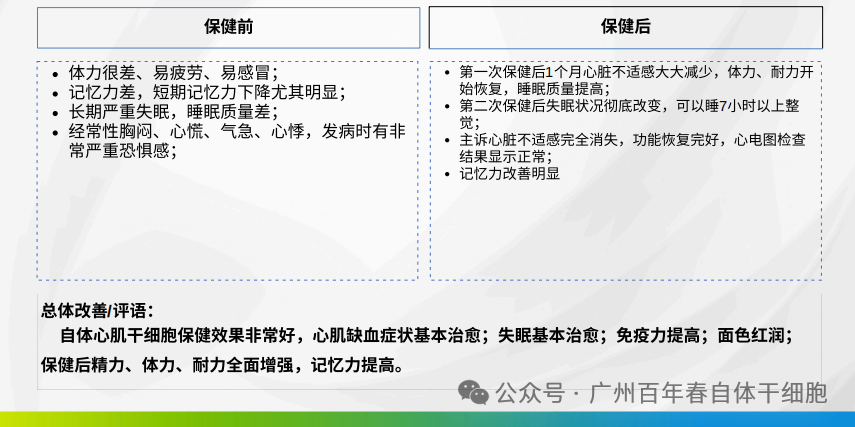

About Us
关于百年春

高血压作为全球常见的慢性病，已严重威胁人类健康，防治高血压刻不容缓！
高血压的危害
01
损害血管
02
引发重大器官病变
03
与肾脏互相伤害
现在对于高血压的治疗有一定的局限性，只能通过改良生活习惯和药物控制血压。长期药物控制，一停药血压反反复复；正如小雨撑伞可避雨，暴雨必成落汤鸡。那么如何筑造生命坚固的保护伞，补充自体干细胞最关键。
自体干细胞 “总结” 高血压

自体干细胞干预高血压原理
1.新生心肌细胞，恢复心脏功能
2.新生内皮细胞，恢复血管功能
3.新生功能细胞，恢复脏器功能
4.提高机体脂蛋白代谢功能
百年春自体干细胞保健案例
1.郭先生79岁心脏病、高血压病史，4次自体干细胞保健

2.唐女士79岁高血压病史，3次自体干细胞保健

3.张女士37岁心肌缺血伴心电图改变：长期失眠伴随记忆力差2次自体干细胞保健

总结
自体干细胞治疗高血压及其并发症疗效显著，输注自体干细胞分化产生不同调节机制中的各种功能细胞，替换异常的功能细胞，恢复其正常的调节功能，从而从根本上改善和治疗高血压。
自体干细胞疗法的“降压”能力值得深入研究探讨，特别在预防严重心脑血管疾病等并发症更具有重要意义。自体干细胞疗法或成为缓解中年“高压”不错的防治手段。
上一篇：
下一篇：
别等身体亮红灯！百年春自体干细胞，为您定制细胞级抗衰防线
2026-03-04
健康投资：2026年个人健康管理为何选择百年春自体干细胞
2026-02-10
卵巢功能“逆袭”奇迹：百年春自体干细胞靶向回输，让AMH值从0.01飙到1.01
2026-02-09
肺部再生，呼吸新生！百年春自体干细胞治疗肺炎、肺纤维化
2026-02-08
香港人才管理协会走进百年春：共探再生医学新未来，开启生命科技新篇章
2026-02-06